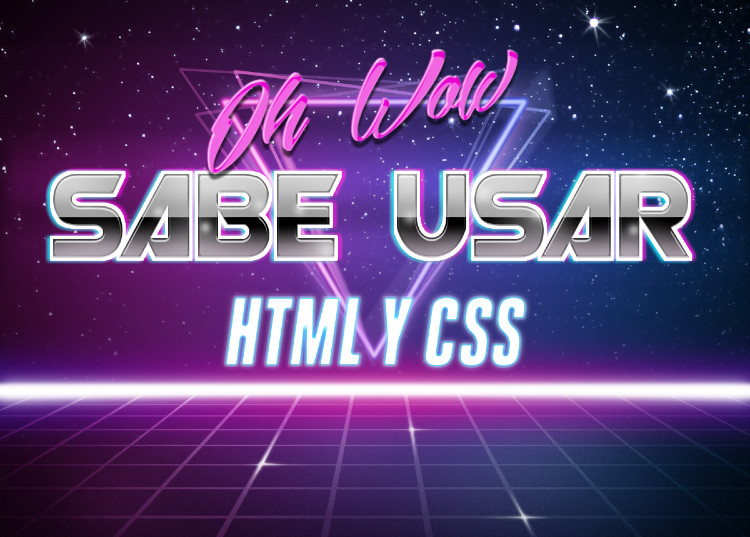

Jorge Alberto Olvera Ramirez

Work Experience
Financiera Trinitas
Database developer 2015-2018
Developed a system for generating,
sorting, and visualizing investor
contracts using FileMaker Pro.
Academic School Projects
Aguilas Guadalupanas
Board member and teacher, 2017
Board member: Designed a program for complementary education not provided by the education department of Mexico.
Teacher: Taught different subjects and successfully developed a system to teach children how to count in binary as an introduction to how computers work.
Filmmaker
Logistics Director, 2013-2014; Vice-president, 2014-2015
Developed Filmmaker, a student-organized film festival. First of its kind in the high school level across all ITESM campuses.
Education
Mexico
ITESM Campus Monterrey, expected May 2020
B.S. Innovation and Development Engineering
Minor in Intelligent Systems
United Kingdom
Edge Hill University
Big Data
Media Futures
Technical Skills
Languages
In order of proficiency
- Python
- Java
- C#
- SQL
- JavaScript
Frameworks
- FileMaker Pro
- TensorFlow
- Keras